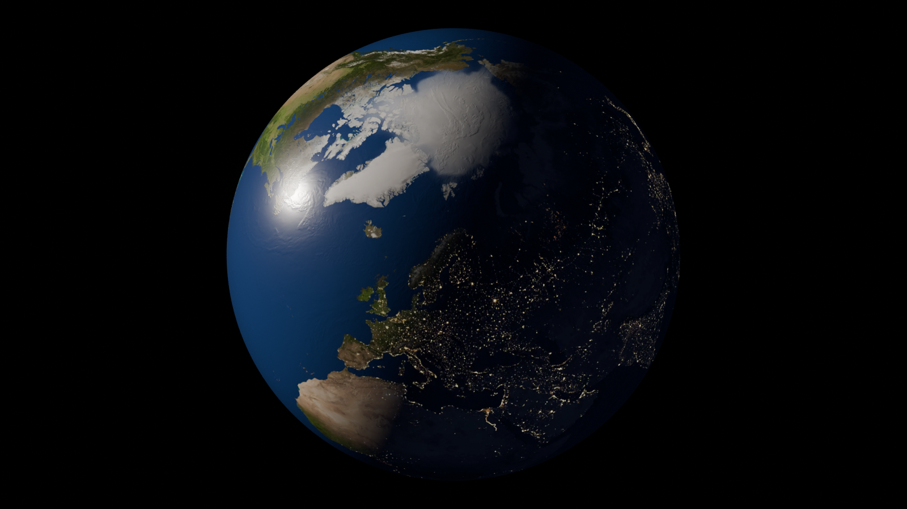
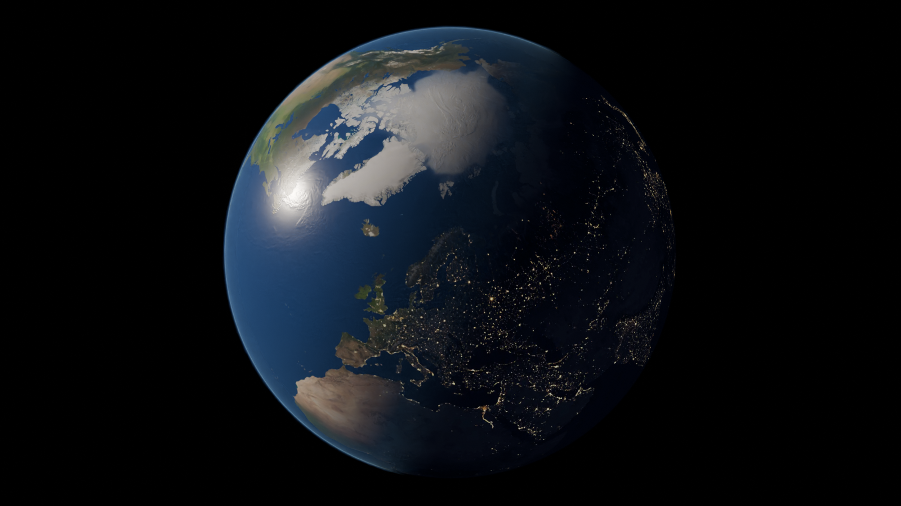
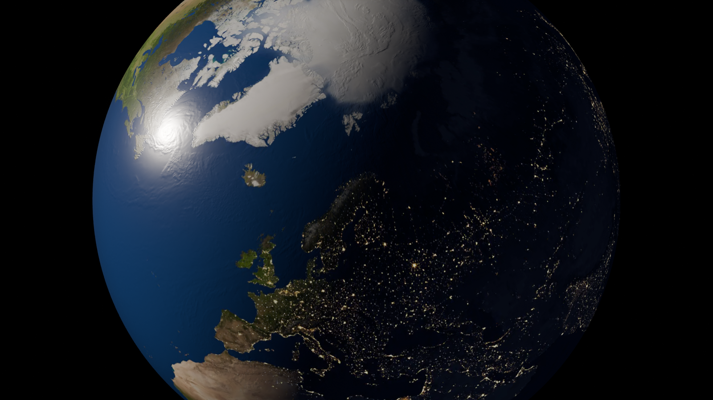
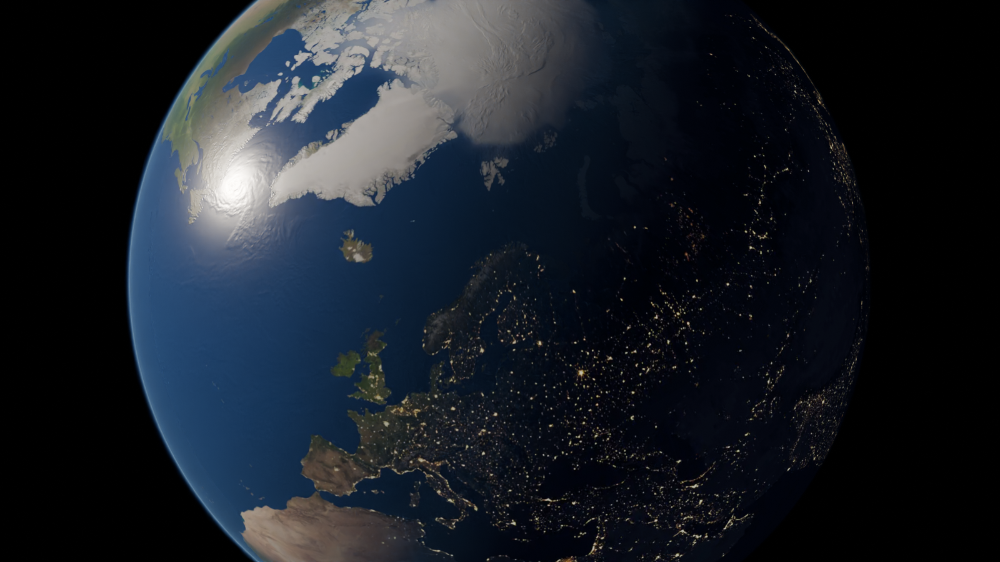

왼쪽 대기 off / 오른쪽 대기 on. Moto 공개 4K 지도 재질의 Blender 번역이며 원작 shader·카메라 재현이 아닙니다. 극지는 실측 DEM이 아닌 제한된 조형 근사, 대기는 단색 방사형 산란 근사입니다. 높은 시점 외관 시험이며 실제 궤도 모델·지역지형 인계·완성 구름 장면은 아닙니다.




TUNE: 대기광 목표 강도/낮밤 경계, 해양 반사 hotspot, 극지 윤곽 재질. 구름 및 지역 DEM은 별도 제작분과 통합해야 합니다.